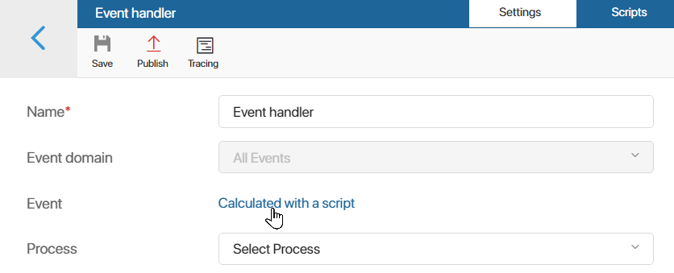

В рамках модуля вы можете настроить обработку различных событий системы.
Обработчик события запускает определённое действие в системе после того, как событие произошло. Это удобно при разработке комплексных модулей.
При наступлении события в системе может:
- выполняться скрипт, созданный в обработчике;
- запускаться бизнес-процесс, настроенный на уровне модуля;
- отправляться сообщение во внешний микросервис. Доступно только в ELMA365 On‑Premises.
Например, в модуле можно создать обработчик, который запускает процесс после редактирования пользователем элемента приложения.
Создать обработчик событий
- Перейдите в Администрирование > Модули.
- Наведите курсор на модуль и нажмите на появившийся значок шестерёнки.
- Перейдите на вкладку Обработка событий.
- Нажмите кнопку + Обработчик и задайте необходимые настройки в открывшемся окне.

- Название* — укажите название обработчика;
- Тип обработчика* — выберите действие, которое будет совершаться при выполнении события:
- Запуск скрипта — выполняет скрипт, созданный в обработчике;
- Запуск процесса — запускает бизнес-процесс, созданный в модуле на вкладке Процессы;
- Передача сообщения в сервис — отправляет сообщение во внешний микросервис. Действие доступно только в ELMA365 On‑Premises.
- Домен события — выберите область, события в которой будет отслеживать обработчик. Вы можете выбрать следующие домены:
- Все события;
- Элементы приложения — в появившемся поле Фильтр типа объекта выберите приложение, события которого будут обрабатываться. Если приложение не указывать, обработчик в модуле будет отслеживать события всех существующих в системе приложений. Можно фиксировать создание, обновление, изменение статуса, удаление элемента, а также добавления комментариев в его ленте.
Если вы установили отслеживание событий создания, обновления или удаления элемента и указали приложение, то в скрипт добавляется свойство EventContext. Оно содержит строго типизированные данные элемента приложения и соответствующего события.
Обратите внимание, модуль с созданным обработчиком и указанным в нём приложением, нельзя экспортировать. Вы можете создать решение и выгрузить модуль и приложение в его составе;
- Задачи — домен доступен при активированном платном решении CRM, в котором включено использование задач CRM. Обработчик фиксирует события, связанные с созданием, изменением, отменой или завершением задач CRM. В появившемся поле Фильтр типа задачи укажите тип задачи, изменения в которой будут отслеживаться модулем: Все задачи CRM, Звонок, Письмо, Вебинар, Встреча. Подробнее о настройке обработчика этого типа читайте в статье «Обработка событий в задачах CRM»;
- Приложения — обработчик отслеживает события экспорта или импорта данных из приложений системы;
- Файлы — позволяет фиксировать создание, редактирование, удаление файла, добавление к нему комментариев и изменение настроек доступа;
- Директории — отслеживает создание, редактирование, удаление и изменение настроек доступа для папок в разделе Файлы;
- Дубли — настроить обработчик можно при активированном платном решении CRM, в котором включён поиск дублей, т. е. элементов приложения с одинаковыми данными. Действие в обработчике запускается при объединении записей-дубликатов. Пример такого обработчика можно посмотреть в статье «Обработка событий в дублях»;
- Модули — позволяет отследить:
- включение и выключение модулей;
- установку и обновление модулей. Обратите внимание, эти события фиксируются, только если обработчик уже есть в системе, а не во время его добавления в составе модуля;
- Настройки — фиксируется редактирование дополнительных параметров, настроенных на уровне компании, раздела или приложения;
- Пользователи — отслеживаются события, связанные с управлением аккаунтом пользователя, а также действия самого пользователя, например, изменение статуса, ошибка авторизации, выход из системы и т. д.
- Динамически вычислять тип события скриптом — опция доступна, если выбран домен Все события или Элементы приложений. При её включении обработчик может отслеживать сразу несколько типов событий, которые задаются в скрипте фильтрации. Фильтрация событий выполняется до запуска самого обработчика. Например, вы можете настроить один обработчик для отслеживания событий по элементам разных приложений;
начало внимание
Фильтрация событий доступна по умолчанию в ELMA365 SaaS и On‑Premises начиная с версии системы 2025.1. Вы можете использовать её в поставке On‑Premises версии 2024.11, включив фича‑флаг enableEventBusDynamicFiltration. Подробнее читайте в статьях «Изменение параметров ELMA365 Enterprise» и «Изменение параметров ELMA365 Standard».
конец внимание
- Событие — выберите событие, после которого будет запускаться обработчик. При включении динамического вычисления типа событий поле не отображается, так как события для отслеживания задаются в скрипте.
- для типа Запуск скрипта — напишите скрипт на вкладке Скрипты. Вы можете получить доступ к переменным из других разделов и пользовательских модулей, настроив опциональные зависимости.
Для создания зависимости на верхней панели нажмите Настройки и добавьте разделы и модули в список. После этого к ним можно обращаться через глобальную константу Imports. Модуль с опциональными зависимостями можно экспортировать без ограничений;

- для типа Запуск процесса — выберите бизнес-процесс, созданный на уровне модуля. Затем на вкладке Входные переменные сопоставьте переменные из контекста процесса со свойствами события: объект, название, автор и т. д.
Для событий предусмотрен ограниченный набор системных полей: идентификатор, название, описание, время события, название объекта, автор и т. д. Также для каждого события есть индивидуальные свойства, отсылающие к выбранному домену и типу действия.
Настройка на вкладке Входные переменные позволяет определить источники данных для свойств из контекста процесса. Она выполняется в зависимости от реализуемого обработчика и конечной потребности пользователя.

Важно: на вкладке Входные переменные отображаются свойства, присутствующие в контексте процесса в момент его привязки к обработчику. Если контекст процесса был изменён, новые переменные не появятся в настройках обработчика. Необходимо повторно создать и настроить обработчик событий, привязав к нему тот же самый бизнес‑процесс.
- для типа Передача сообщения в сервис — укажите микросервис.
- Если вы включили динамическое вычисление типа события, задайте фильтр для отбора событий, которые отслеживает обработчик. Для этого на вкладке Настройки нажмите ссылку Вычисляется скриптом.

Откроется вкладка Скрипты. В методе filter() укажите типы событий для отслеживания. Доступные варианты зависят от домена, выбранного при создании обработчика:
- Все события — можно указать типы событий из различных доменов. Их список ограничен. При создании фильтра вы увидите подсказки с возможными значениями;
- Элементы приложений — доступны только события по элементам приложений.
Подробнее о написании скрипта и особенностях динамической фильтрации читайте в справке ELMA365 TS SDK.
Сформированный фильтр применится после публикации обработчика событий и включения модуля. Обработчик будет запускаться по событиям системы, которые подходят под заданные условия.
- Опубликуйте обработчик.
Таким образом в пользовательском модуле можно добавить несколько обработчиков событий. Например, при смене статуса элементов приложения Заказы будет запускаться бизнес‑процесс обработки. При этом с помощью скрипта или шлюза можно настроить разные ветки хода процесса в зависимости от статуса элемента.
В ELMA365 Community вы можете ознакомиться с настройкой обработчиков на примерах:
- отслеживание изменения значений в свойствах элементов приложения;
- отправка письма на электронную почту при изменении статуса элемента приложения.
Кроме того, с использованием обработчиков с доменами, доступными только при активированном решении CRM, можно ознакомиться в статьях «Обработка событий в задачах CRM», «Обработка событий в дублях».
Трассировка скрипта обработчика
Если для обработчика типа Запуск скрипта включён сбор трейсов в разделе Администрирование > Инструменты разработчика, вы можете проанализировать выполнение его скрипта. Это позволяет оценить продолжительность отдельных запросов, оптимизировать код и выявить причины ошибок.
Чтобы изучить трейсы, в настройках модуля откройте вкладку Обработка событий. Для просмотра записей:
- по всем обработчикам в модуле — в правом верхнем углу страницы нажмите Посмотреть трассировку;
- по определённому обработчику — нажмите на его название и на верхней панели выберите Трассировка.
Подробнее о включении трассировки и информации в карточке трейса читайте в статье «Трассировка серверных скриптов».
Отменить действие обработчика
Чтобы отменить действие обработчика, на вкладке Обработка событий нажмите на три точки напротив названия созданного обработчика. Затем выберите кнопку Отмена публикации. При этом после выполнения события действие обработчика не будет совершаться.
Кроме того, при необходимости вы можете удалить существующий обработчик событий. Для этого на вкладке Обработка событий отметьте один или несколько обработчиков в списке. Нажмите кнопку Удалить, появившуюся в правом верхнем углу страницы.